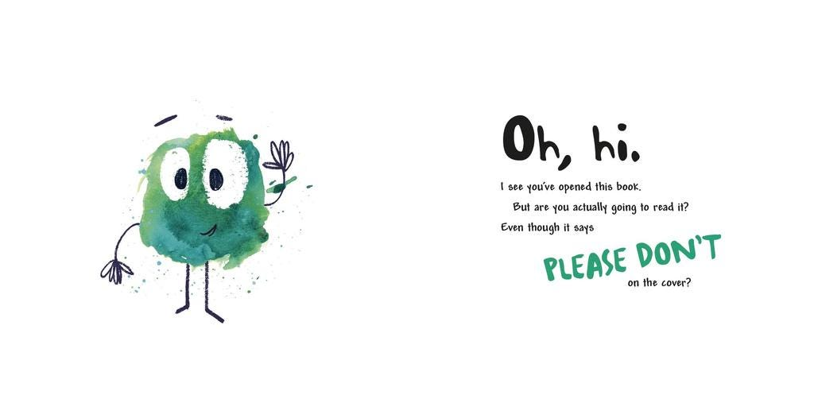

Writing yourself’s way to success
Please read books!


Illustrated by SAM BOUGHTON
Writing my way to success is what I am doing and It’s just an amazing activity that I advise you to do because it is helpful for others to know about your failures, ideas, and thoughts which could help them through their own journey to success. That’s what we all do when we are reading a book, a newspaper, a blog, or a magazine, almost every written piece of content. You should write every day if you can because it is an exciting exercise that helps you structure your way of thinking and produce good ideas but for sure time is scarce and you may not have time to take a pen and write or to punch at a keyboard like I am doing right now. To say that I benefited from the authors of all these pieces of written content that I have read until there to know how you can do it timelessly and how to fit it to your personal and professional goals making them easy to achieve.
There is not a single field of interest where you cannot read something about and everything is not still written down them we can keep reading and writing because it is better for us and others.
Writers and readers are still waiting for their games and books to say at Book Dojo and Godda Game we are until there out of delay. it easy to take responsibility when the decision affects only one person which is the case for these two high-status ventures projects startup and the mere corporation emb… is not happy from our work until there even if we got no funding from emb.. because it is this kind of mere corporation that could live only if their childs companies mature from idea to startup and company. Connecting the dots was always the job to be done and it is still the job to be done. Creating connections is the strategy and who hold and technology that connects dot always win and the end, all these big tech companies are on top of connection engines while we are building on but I believe our is better for those we seek to serve and empower. like you, they are readers and writers and some of them are gamers and learners other engineers, designers, marketers, traders, and software engineers, all Smart persons like you who know what they want and how to get it.
This will very likely go to my CEO MEDIUM PUBLICATION and remembered me of all these amazing works about blogging all being part of data-driven books and book-driven platforms for books readers and book communities.
PS: if clicking on the button publish on Medium is the job to be done by a publishing startup Book Dojo is the best publishing startup but of course it is not that only but something else or more of this. This is very close to this